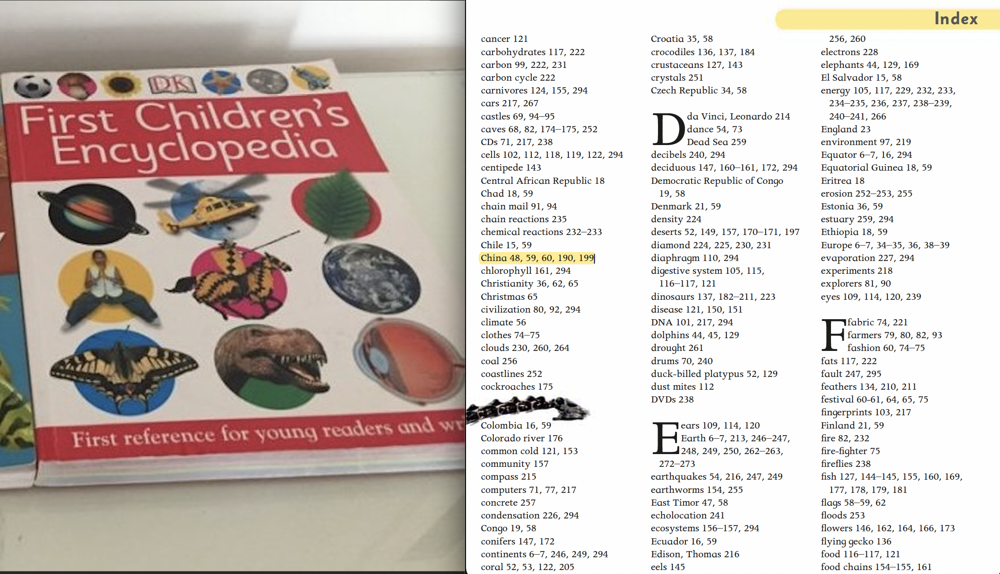
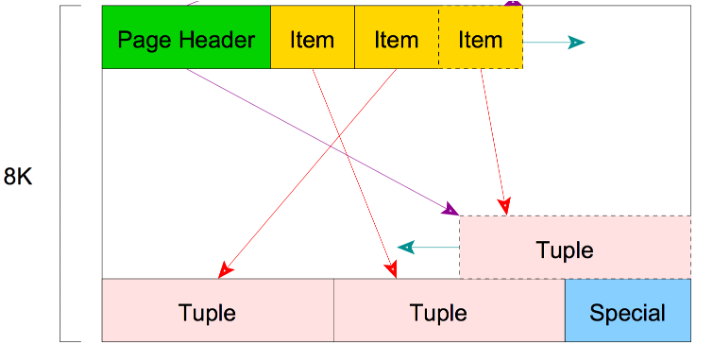
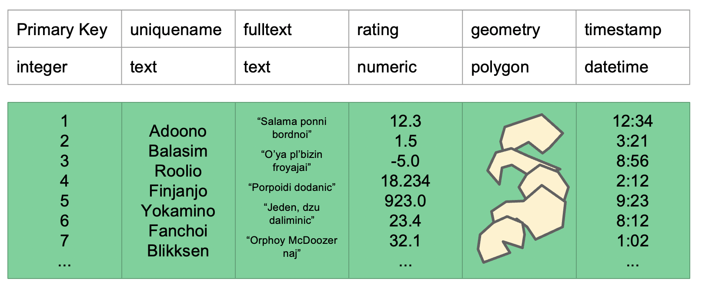
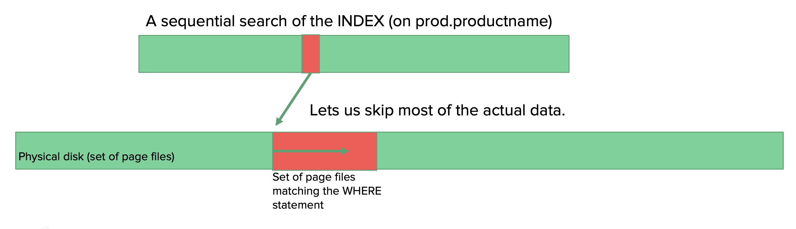
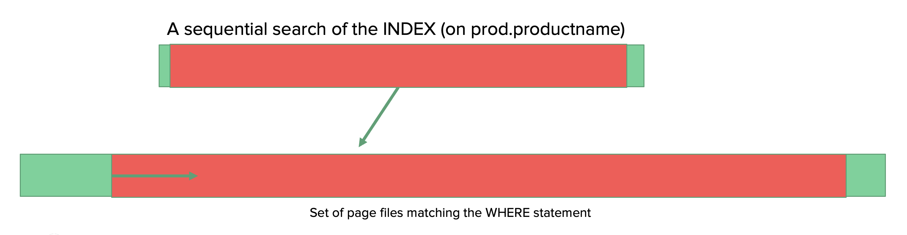

6. Lecture 5: Disk Management and Indexes¶
Gittu George, January 18 2022
6.1. Todays Agenda¶
How do humans store and search data?
How does Postgres store data?
How does Postgres search data?
WHY indexes?
WHAT are indexes?
Different kinds of indexes
Do I need an index?
6.2. Learning objectives¶
You will apply knowledge of disk management and query structure to optimize complex queries.
You will understand the different types of INDEXes available in Postgres and the best-suited applications
You will be able to profile and optimize various queries to provide the fastest response.
I will use the testindex table from fakedata schema for demonstration. You can load this data to your database using this dump. It’s a zip file; do make sure you extract it.
6.3. How do humans store and search data?¶
Think about how we used to store data before the era of computers? We used to store the data in books. Let’s take this children’s encyclopedia as an example.
{kind=link}
.
There are around 300 pages in this book, and if a kid wants to know about China, they will go from the first page until she gets to 48th page.
This is how a kid would search, but if you want to read about china, you would go to the index of this book, look for China, and go to the 48th page straight away. If you want to read some history about indexes, check out this article.
OKAY, now you all know how humans search for data from a book; Postgres also store and search data similarly.
6.4. How does Postgres store data?¶
Information within a database is also stored in pages. A database page is not structured like in a book, but it’s structured like below.
{kind=link}
.
So these pages are of 8 kB blocks; there are some meta-data as headers (green) at the front of it and item ID (yellow) that points to the tuples(rows). This ends with a special section (blue) left empty in ordinary tables, but if we have some indexes set on the tables, it will have some information to facilitate the index access methods.
So a table within a database will have a list of pages where the data is stored, and these individual pages store multiple tuples within that table.
Read more about it here.
6.5. How does Postgres search data?¶
Let’s consider a complicated table.
{kind=link}
For explanation, let’s assume that the contents in this table are stored in 3 page files. Here we are interested in finding the rows with the unique name that starts with y. A database, just like a kid, needs to search through the 3 pages to find the rows that contain a name that begins with y. This is a sequential search, and this is how a database search by default. This process could be slow if we got millions of rows spread across multiple pages, as the computer needs to go through the entire pages to find the names that start with y.
Also, here in this example, let’s assume that Yokamino is on page 2, the database will find this on page 2, but it will still go to page 3 in search of other occurrences of names that start with y. WHY? Because it doesn’t know that there is only a single occurrence of a name that starts with y.
Let’s look at how Postgres search for data using EXPLAIN. We will do this on table fakedata.testindex,
import os
import psycopg2
import psycopg2.extras
import random
from dotenv import load_dotenv
import time
import datetime
load_dotenv()
conString = {'host':os.environ.get('DB_HOST'),
'dbname':os.environ.get('DB_NAME'),
'user':os.environ.get('DB_USER'),
'password':os.environ.get('DB_PASS'),
'port':os.environ.get('DB_PORT')}
conn = psycopg2.connect(**conString)
cur = conn.cursor()
## i am dropping previous index
createindex = """DROP INDEX if exists fakedata.hash_testindex_index;
DROP INDEX if exists fakedata.pgweb_idx;
DROP INDEX if exists default_testindex_index;"""
cur.execute(createindex)
conn.commit()
Here, we do a normal search for a product name within the column productname.
query = """explain analyze select count(*) from fakedata.testindex where productname = 'flavor halibut';"""
cur.execute(query)
cur.fetchall()
We are doing a pattern matching search to return all the productname that start with fla.
query = """EXPLAIN ANALYZE SELECT COUNT(*) FROM fakedata.testindex WHERE productname LIKE 'fla%';"""
cur.execute(query)
cur.fetchall()
Note
A query is turned into an internal execution plan breaking the query into specific elements that are re-ordered and optimized. Read more about EXPLAIN here. This blog also explains it well.
These are computers, so it’s faster than humans to go through all the pages, but it’s inefficient. Won’t it be cool to tell the database that the data you are looking for is only on certain pages, so you don’t want to go through all these pages !!! This is WHY we want indexes. We will see if indexing can speed up the previous query.
6.6. WHAT are indexes?¶
Indexes make a map of each of these rows effectively as where they are put into the page files so we can do a sequential scan of an index to find the pointer to page/pages this information is stored. So the database can go straight to those pages and skip the rest of the pages.
{kind=link}
Index gets applied to a column in a table. As we were querying on the column productname, let’s now apply an index to the column productname in the database and see how the query execution plan changes. Will it improve the speed? Let’s see..
%%time
createindex = """CREATE INDEX if not exists default_testindex_index ON fakedata.testindex (productname varchar_pattern_ops);"""
cur.execute(createindex)
conn.commit()
query = """explain analyze select count(*) from fakedata.testindex where productname = 'flavor halibut';"""
cur.execute(query)
cur.fetchall()
query = """EXPLAIN ANALYZE
SELECT COUNT(*) FROM fakedata.testindex
WHERE productname LIKE 'fla%';"""
cur.execute(query)
cur.fetchall()
It increased the speed, and you see that your query planner used the index to speed up queries.
But keep in mind if the selection criteria are too broad, or the INDEX is too imprecise, the query planner will skip it.
{kind=link}
Let’s try that out.
query = """EXPLAIN ANALYZE
SELECT COUNT(*) FROM fakedata.testindex
WHERE productname LIKE '%';"""
cur.execute(query)
cur.fetchall()
It’s good that database engines are smart enough to identify if it’s better to look at an index or perform a sequential scan. Here in this example, the database engine understands the query is too broad. But, ultimately, it’s going to search through entire rows, so it’s better to perform a sequential scan rather than look up at the index.
As the index is making a map in the disk, it takes up disk storage. Let’s see how much space this index is taking up
query = """SELECT pg_size_pretty (pg_indexes_size('fakedata.testindex'));"""
cur.execute(query)
cur.fetchall()
Now we realize indexes are great! So let’s try some different queries.
query = """EXPLAIN ANALYZE
SELECT COUNT(*) FROM fakedata.testindex
WHERE productname LIKE '%fla%';"""
cur.execute(query)
cur.fetchall()
This was not too broad search; we were trying to return all the elements that contains fla. But why didn’t it speed things up? So we can’t always go with default indexing, and it might not be helpful in all cases. That’s why it’s important to know about different indexes and a general understanding of how it works. This will help you to choose indexes properly in various situations.
6.7. Different kinds of indexes¶
In this section, we will go through various kinds of indexes and syntax for creating them;
B-Tree (binary search tree - btree)
Hash
GIST (Generalized Search Tree)
GIN (Generalized Inverted Tree)
BRIN (Block Range Index)
Each has its own set of operations, tied to Postgres functions/operators. For example, you can read about indexes here.
The general syntax for making an index:
CREATE INDEX indexname ON schema.tablename USING method (columnname opclass);
B-Tree is the default index, and you can see we used this previously for column productname.
CREATE INDEX if not exists default_testindex_index ON fakedata.testindex (productname varchar_pattern_ops);
6.7.1. B-Tree¶
Values are balanced across nodes to produce a minimum-spanning tree.
Each node splits values, each “leaf” points to addresses.
All nodes are equidistant from the root.
High Key

Btree is not just about dealing with numbers but also handling text columns; that’s the reason why I gave varchar_pattern_ops as opclass. So in this example, finds the field that we are looking for in just 3 steps, rather than scanning 7 rows.
{kind=link}
6.7.2. Hash¶
Cell values are hashed (encoded) form and mapped to address “buckets”
Hash -> bucket mappings -> disk address
The hash function tries to balance the number of buckets & number of addresses within a bucket
Hash only supports EQUALITY
{kind=link}
Let’s create a hash index on column productname and execute queries that we ran before
%%time
## i am dropping previous index
createindex = """DROP INDEX fakedata.default_testindex_index;
CREATE INDEX if not exists hash_testindex_index ON fakedata.testindex USING hash(productname);"""
cur.execute(createindex)
conn.commit()
query = """explain analyze select count(*) from fakedata.testindex where productname = 'flavor halibut';"""
cur.execute(query)
cur.fetchall()
query = """EXPLAIN ANALYZE
SELECT COUNT(*) FROM fakedata.testindex
WHERE productname LIKE 'fla%';"""
cur.execute(query)
cur.fetchall()
query = """SELECT pg_size_pretty (pg_indexes_size('fakedata.testindex'));"""
cur.execute(query)
cur.fetchall()
Why do you think hash takes up more space here?
When do you think it’s best to you hash indexing?
6.7.3. GIN¶
Before talking about GIN indexes, let me give you a little bit of background on a full-text search. Full-text search is usually used if you have a column with sentences and you need to query rows based on the match for a particular string in that sentence. For example, say we want to get rows with new in the sentence column.
row number |
sentence |
|---|---|
1 |
this column has to do some thing with new year, also has to do something with row |
2 |
this column has to do some thing with colors |
3 |
new year celebrated on 1st Jan |
4 |
new year celebration was very great this year |
5 |
This is about cars released this year |
We usually query it this way, this definitely will return our result, but it takes time.
SELECT * FROM fakedata.testindex
WHERE productname LIKE '%new%';
That’s why we go for full-text search; I found this blog to help understand this.
SELECT * FROM fakedata.testindex
WHERE to_tsvector('english', sentence) @@ to_tsquery('english','new');';
Here we are converting the type of column sentence to tsvector
Here the first row in sentence column this column has to do something with the new year, also has to do something with row will be represented like this internally
'also':11 'column':2 'do':5,14 'has':3,12 'new':9 'row':17 'some':6 'something':15 'thing':7 'this':1 'to':4,13 'with':8,16 'year':10
to_tsquery is how you query, and here we query for new using to_tsquery('english','new').
Postgres does a pretty good job with the full-text search, but if we want to speed up the search, we go for GIN indexes. The column needs to be of tsvector type for a full-text search.
Indexing many values to the same row
Inverse of B-tree - one value to many rows e.g., “quick”, or “brown” or “the” all point to row 1
Most commonly used for
full-text searching.

Let’s try these on our tables;
query = """EXPLAIN ANALYZE SELECT count(*) FROM fakedata.testindex WHERE to_tsvector('english', productname) @@ to_tsquery('english','flavor');"""
cur.execute(query)
cur.fetchall()
%%time
createindex = """DROP INDEX if exists fakedata.hash_testindex_index;
DROP INDEX if exists fakedata.pgweb_idx;
CREATE INDEX if not exists pgweb_idx ON fakedata.testindex USING GIN (to_tsvector('english', productname));
CREATE INDEX if not exists pgweb_idx_mat ON fakedata.testindex_materialized USING GIN (productname_ts);"""
cur.execute(createindex)
conn.commit()
query = """EXPLAIN ANALYZE SELECT count(*) FROM fakedata.testindex WHERE to_tsvector('english', productname) @@ to_tsquery('english','flavor');"""
cur.execute(query)
cur.fetchall()
By creating a materialized view with a computed tsvector column, we can make searches even faster, since it will not be necessary to redo the to_tsvector calls to verify index matches.
query = """EXPLAIN ANALYZE SELECT count(*) FROM fakedata.testindex_materialized WHERE productname_ts @@ to_tsquery('english','flavor');"""
cur.execute(query)
cur.fetchall()
This indexing does speed up things if we want to search for a particular word from a column, like flavor. But if we want to search for some pattern within a sentence, then this index won’t help. EG the query what we trying from beginning
query = """EXPLAIN ANALYZE
SELECT COUNT(*) FROM fakedata.testindex
WHERE productname LIKE '%fla%';"""
cur.execute(query)
cur.fetchall()
Hence, we want a different flavor of gin indexing, trigram index. I found this blog to help understand this.
Trigrams are a special case of N-grams. The concept relies on dividing the sentence into a sequence of three consecutive letters, and this result is considered as a set .Before performing this process
Two blank spaces are added at the beginning.
One at the end.
Double ones replace single spaces.
The trigram set corresponding to “flavor halibut” looks like this:
{” f”,” h”,” fl”,” ha”,ali,avo,but,fla,hal,ibu,lav,lib,”or “,”ut “,vor}
These are considered words, and the rest remains the same as what we discussed before. To use this index add gin_trgm_ops as operator class. Let’s do it.
%%time
createindex = """DROP INDEX if exists fakedata.pgweb_idx;
CREATE INDEX pgweb_idx ON fakedata.testindex USING GIN (productname gin_trgm_ops);"""
cur.execute(createindex)
conn.commit()
Let’s see if it speeds up the query that we tried in many cases before.
query = """EXPLAIN ANALYZE
SELECT COUNT(*) FROM fakedata.testindex
WHERE productname LIKE '%fla%';"""
cur.execute(query)
cur.fetchall()
query = """EXPLAIN ANALYZE
SELECT COUNT(*) FROM fakedata.testindex
WHERE productname LIKE '%flavor%';"""
cur.execute(query)
cur.fetchall()
Finally, we see this query is using indexes, and it did speed up the query.
6.7.4. GIST¶
Supports many search types, including spatial and full text.
Can be extended to custom data types
Balanced tree-based method (nodes & leaves)
{kind=link}
6.7.5. BRIN¶
Indexes block statistics for ordered data
Block min & max mapped to index
Search finds block first, then finds values
Best for larger volumes of data
This is essentially how we read a book’s index.
{kind=link}
We will use this later when we go through our Twitter example (tomorrow’s lecture).
Now we have learned about indexes, can you answer these questions?
What are indexes?
Different types of indexes?
When to use indexes?
How to use an index?
Why do I need an index?
6.8. Compared to Other Services¶
BigQuery, AWS RedShift
Don’t use Indexes, infrastructure searches whole “columns”
MongoDB
Single & multiparameter indexes (similar to b-tree)
spatial (similar to GIST)
text indexes (similar to GIN)
hash index
Neo4j (Graph Database)
b-tree and full text
6.9. Summary¶
Indexes are important to speed up operations
Indexes are optimized to certain kinds of data
Index performance can be assessed using
EXPLAIN.Indexes can come at a cost